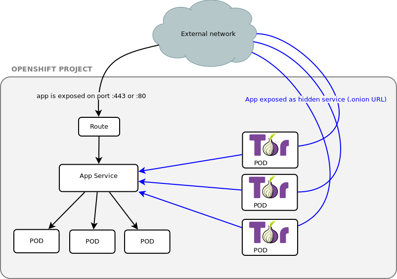
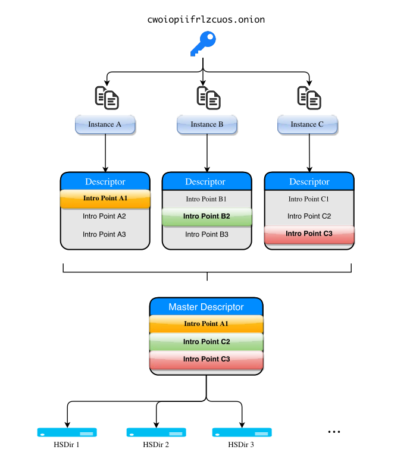
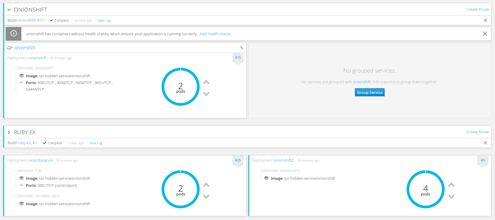
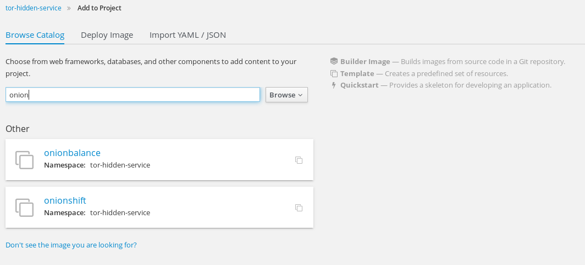
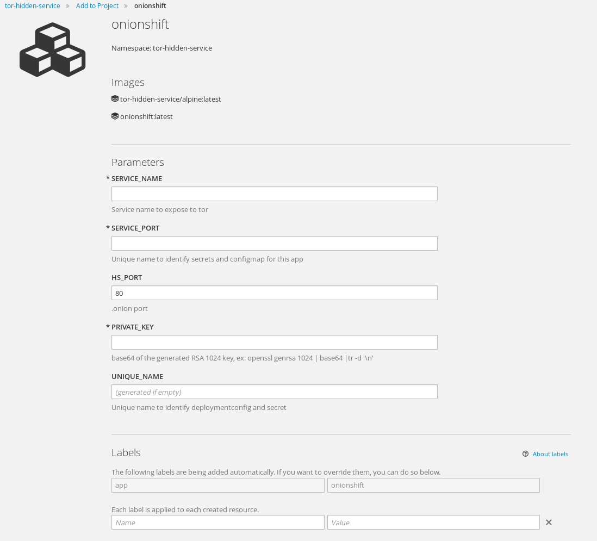
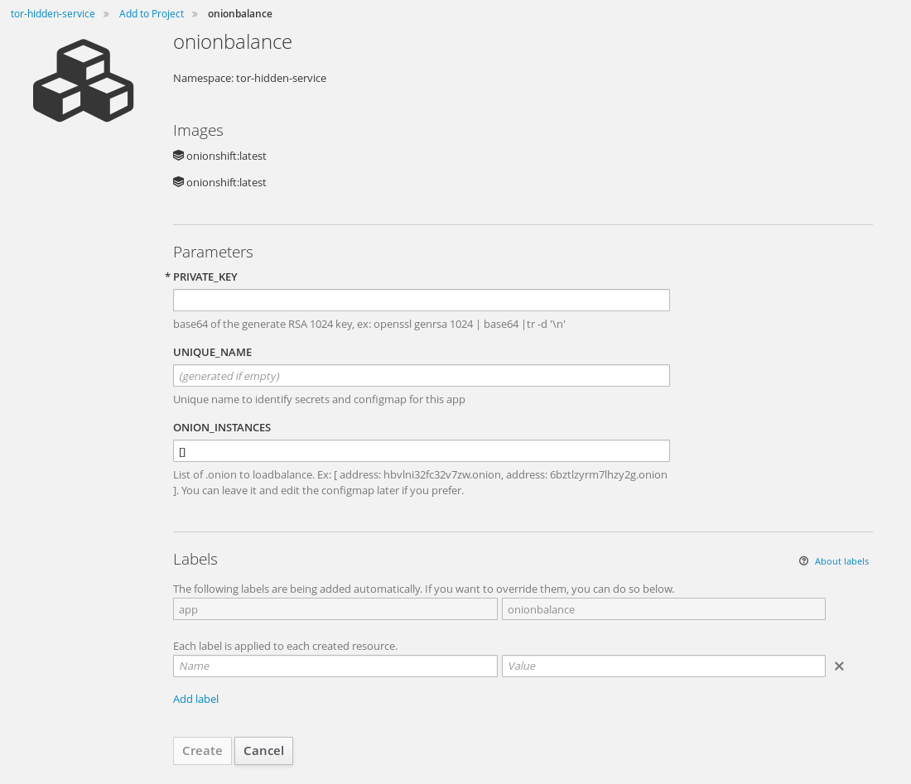
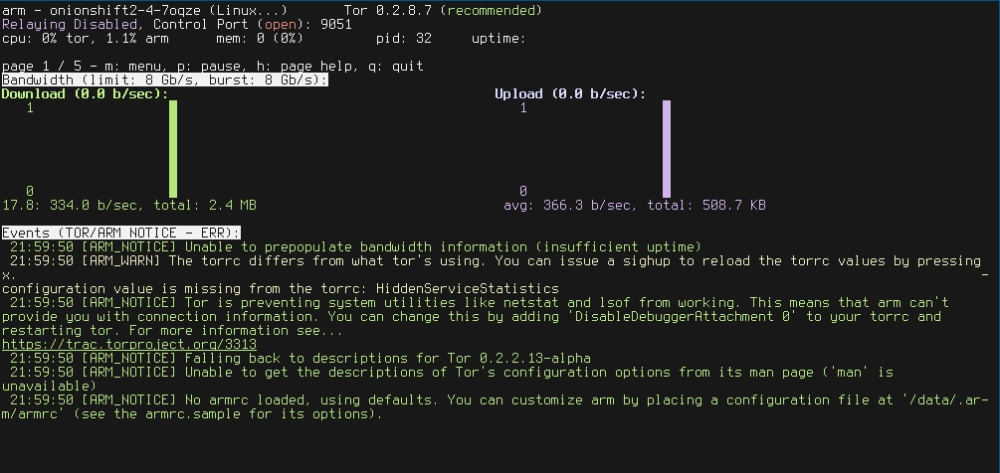

Tor hidden service on Openshift 3
2016-10-04 ~ #openshift #tor
Table of content:
- The Application
- Expose your app on Tor and get your .onion
- Scalability with onionbalance
- Templates
- Monitor tor daemon with arm
- Links
- Ideas and TODOs
TL;DR ?
- GO THERE for Openshift templates to quickly do the job for both tor and onionbalance
- GO THERE for one-line command to quickly expose an openshift service on tor.
So i asked myself :
- How to simply expose your Openshift app via Tor ?
- How hard would it be ?
- Would it scale ?
Why ?
- for fun
- your app audience needs a tor .onion access (journalists, ...)
- use Tor as an alternative mean to expose your Openshift App. Thanks to HiddenServiceAuthorizeClient option, you can even expose it to only specific users.
- Why not take advantage of Openshift scalability and HA to host Tor hidden services ?
Here the logic diagram of what i'll try to accomplish :

Some observations:
- to get a single .onion address for a service is easy, see official doc
- (kindof) load-balancing is possible by creating 2 or more tor instances sharing the same private_key
- to load-balance over several .onion you need an additional daemon, onionbalance
In this schema, the Tor pods serve different .onion hostname, so you'll have to communicate those addresses to the users.
Unless you setup an additional tool: onionbalance. It is possible to loadbalance tor .onion but it requires onionbalance, which acts as a kind of DNS round robin but for Tor:

In this post, i'll describe all the steps i've been through. I'll start with a simple one-instance tor .onion. Then try onionbalance and see how it can be "Openshiftized". The ideal would be to be able to scale up and down tor pods and have the onionbalance pod updated automatically. At the end, i'll try to summarize everything into a template.
The Application
In this exercise i do not care about the app at all, so i just run :
oc new-app centos/ruby-22-centos7~https://github.com/openshift/ruby-ex.git
It creates pods and a ruby-ex service i'll route later via Tor.
Expose your app on Tor and get your .onion
Tor HiddenServicePort
To be able to reach your app via a .onion URL, server-side you'll need a tor daemon (client mode) running with an hidden service configured pointing to your openshift service.
I searched if there was any existing Docker image for tor (of course there is one..) and found this Dockerfile.
It compiles tor on Alpine, which is tiny (4.795MB), secure, etc. It sounds like a good plan.
So i forked this repo, removed all the unecessary stuff, added other stuff, like rsync to be able to use oc rsync. My idea was: Everything that will be handled by openshift can be moved out so the image is agnostic.
Here is the result : https://github.com/fridim/onionshift
one-line command to expose a service
oc new-app https://github.com/fridim/onionshift -e SERVICE_NAME=ruby-ex,SERVICE_PORT=8080
This will create everything (deployment config, buildconfig, ...) and pod will have a simple torrc based on the template in the repository. It's dead simple, and if you want to add a more complex tor configuration, you can use configMap (see bellow).
You should see the docker build and the final push to the registry. Then a pod onionshift-... should be running.
Tor will create a private_key and hostname in the directory specified by HiddenServiceDir.
Check the logs :
$ oc logs tor-7-buxlt
+ cd /data
+ export SERVICE_NAME=ruby-ex
+ SERVICE_NAME=ruby-ex
+ export SERVICE_PORT=8080
+ SERVICE_PORT=8080
+ export HS_PORT=80
+ HS_PORT=80
+ '[' '!' -e /etc/tor/torrc ']'
+ envsubst
+ /usr/bin/tor -f torrc
Sep 29 13:05:40.101 [notice] Tor v0.2.8.7 running on Linux with Libevent 2.0.22-stable, OpenSSL 1.0.2j and Zlib 1.2.8.
Sep 29 13:05:40.101 [notice] Tor can't help you if you use it wrong! Learn how to be safe at https://www.torproject.org/download/download#warning
Sep 29 13:05:40.101 [notice] Read configuration file "/data/torrc".
Sep 29 13:05:40.107 [notice] Wow! I detected that you have 24 CPUs. I will not autodetect any more than 16, though. If you want to configure more, set NumCPUs in your torrc
Sep 29 13:05:40.107 [notice] Opening Socks listener on 127.0.0.1:9050
Sep 29 13:05:40.000 [notice] Parsing GEOIP IPv4 file //share/tor/geoip.
Sep 29 13:05:40.000 [notice] Parsing GEOIP IPv6 file //share/tor/geoip6.
Sep 29 13:05:40.000 [notice] Bootstrapped 0%: Starting
Sep 29 13:05:41.000 [notice] Bootstrapped 5%: Connecting to directory server
Sep 29 13:05:41.000 [notice] Bootstrapped 10%: Finishing handshake with directory server
Sep 29 13:05:41.000 [notice] Bootstrapped 15%: Establishing an encrypted directory connection
Sep 29 13:05:41.000 [notice] Bootstrapped 20%: Asking for networkstatus consensus
Sep 29 13:05:41.000 [notice] Bootstrapped 25%: Loading networkstatus consensus
Sep 29 13:05:41.000 [notice] I learned some more directory information, but not enough to build a circuit: We have no usable consensus.
Sep 29 13:05:41.000 [notice] Bootstrapped 40%: Loading authority key certs
Sep 29 13:05:41.000 [notice] Bootstrapped 45%: Asking for relay descriptors
Sep 29 13:05:41.000 [notice] I learned some more directory information, but not enough to build a circuit: We need more microdescriptors: we have 0/7187, and can only build 0% of likely paths. (We have 0% of guards bw, 0% of midpoint bw, and 0% of exit bw = 0% of path bw.)
Sep 29 13:05:41.000 [notice] Bootstrapped 50%: Loading relay descriptors
Sep 29 13:05:42.000 [notice] Bootstrapped 56%: Loading relay descriptors
Sep 29 13:05:42.000 [notice] Bootstrapped 62%: Loading relay descriptors
Sep 29 13:05:42.000 [notice] Bootstrapped 67%: Loading relay descriptors
Sep 29 13:05:42.000 [notice] Bootstrapped 75%: Loading relay descriptors
Sep 29 13:05:42.000 [notice] Bootstrapped 80%: Connecting to the Tor network
Sep 29 13:05:42.000 [notice] Bootstrapped 90%: Establishing a Tor circuit
Sep 29 13:05:43.000 [notice] Tor has successfully opened a circuit. Looks like client functionality is working.
Sep 29 13:05:43.000 [notice] Bootstrapped 100%: Done
Grab the .onion address:
$ oc exec tor-7-buxlt cat /data/tor/hidden_service/hostname
siojz6ucairjccsu.onion
Test it in tor-browser :)
This address will disapear as soon as the pod is deleted. If you want to be able to reuse the same .onion address over and over across pod creations, you'll need to store it somewhere (mount secrets inside pods, or add persistent volume).
Tor Configuration
If you're happy with the torrc generated from the template, you can skip this section.
There is a lot of options to control the tor daemon. You will find a complete example of torrc here.
Regarding how to put it inside pods, if you take the example of postgresql image for Openshift, the configuration is generated at runtime from env variables :
I'm not going to add every option avaible in torrc as an env variable. I only added a few to be able to quickly expose any service to tor with one command, but that's it.
A simpler way is to use configMap and mount it to /etc/tor/torrc.
configMap
Many applications require configuration via some combination of config files, command line arguments, and environment variables. These configuration artifacts should be decoupled from image content in order to keep containerized applications portable. The ConfigMap API resource provides mechanisms to inject containers with configuration data while keeping containers agnostic of Kubernetes. ConfigMap can be used to store fine-grained information like individual properties or coarse-grained information like entire config files or JSON blobs.
So first create a torrc configuration file. We'll use the app service name for the hiddenServicePort value :
### /etc/torrc ###
# https://www.torproject.org/docs/tor-manual.html.en
# CONFIGURE THIS BEFORE RUNNING TOR!
DataDirectory /data/tor
HiddenServiceDir /data/tor/hidden_service/
HiddenServicePort 80 ruby-ex:8080
Add this file to the project as a configMap:
oc create configmap torrc \
--from-file=torrc
Check if it's OK, mine looks like this:
[fridim@master onionshift]$ oc get configmap -o yaml
apiVersion: v1
items:
- apiVersion: v1
data:
torrc: |
### /etc/torrc ###
# https://www.torproject.org/docs/tor-manual.html.en
# CONFIGURE THIS BEFORE RUNNING TOR!
DataDirectory /data/tor
HiddenServiceDir /data/tor/hidden_service/
HiddenServicePort 80 ruby-ex:8080
kind: ConfigMap
metadata:
creationTimestamp: 2016-09-22T16:10:50Z
name: torrc
namespace: tor-hidden-service
resourceVersion: "1419464"
selfLink: /api/v1/namespaces/tor-hidden-service/configmaps/torrc
uid: 2129fb99-80df-11e6-a17e-ac162d7c2550
kind: List
metadata: {}
Then add a volume from this configMap :
oc volume dc/onionshift --add --type=configMap --configmap-name=torrc -m /etc/tor
DeploymentConfig update triggers re-deployment and creates a new pod with the new torrc conf.
Persistent .onion
Before you setup onionbalance, let's have persistent .onion address, aka keep the same private_key of your hidden service accross pod creations.
The first time you run tor it creates hidden_service directory and generates private_key.
Backup the private_key and hostname using rsync:
fridim@master ~]$ mkdir hidden_service
[fridim@master ~]$ oc rsync onionshift-21-eqsrq:/data/tor/hidden_service/ hidden_service/
receiving incremental file list
./
hostname
private_key
sent 68 bytes received 1074 bytes 761.33 bytes/sec
total size is 910 speedup is 0.80
Create a secret with the private key :
[fridim@master hidden_service]$ oc create secret generic privatekey --from-file=privatekey=./private_key
secret "privatekey" created
(You need to specify the secret name as you can't have underscore in the name)
Now mount this private_key to be used at runtime. We cannot mount it directly to the final destination /data/tor/hidden_service/private_key because it would have root ownership when tor is run as a user and will then complain that ownership is not correct. To bypass this, tor-entrypoint.sh imports the key found in /data/import into /data/tor/hidden_service/private_key.
So mount the privatekey secret into /data/import :
oc volume dc/onionshift --add --mount-path=/data/import --secret-name=privatekey
tor-entrypoint.sh will move the key to /data/tor/hidden_service/private_key so you can let the filename in import/ be the secret name (you don't need to edit the deployment config to set .secret.items[].path to private_key).
There you go, .onion address will last across pod deletion/creation.
You can scale UP the pod number of replicas, tor daemons will share the same key and clients will be dispatched randomly to tor instances (not equally, see this paper).
oc scale --replicas=2 dc onionshift
You can go up to 6 I think.
Scalability with onionbalance
Create more tor instances
For now we have one persistent .onion with several tor instances registering to HSDir at different moments, so clients are load-balanced to those pods.
Let's create another bunch of tor pod with another key in order to use onionbalance. For that, just edit the current deploymentConfig
oc edit dc
- Duplicate the section of onionshift.
- Rename the pod and deploymenconfig.
- Remove the volumes as we didn't create the privatekey yet.
Example:
---
apiVersion: v1
kind: DeploymentConfig
metadata:
annotations:
openshift.io/generated-by: OpenShiftNewApp
labels:
app: onionshift
name: onionshift2
spec:
strategy:
type: Rolling
replicas: 2
selector:
app: onionshift
deploymentconfig: onionshift2
template:
metadata:
annotations:
openshift.io/generated-by: Hand
creationTimestamp: null
labels:
app: onionshift
deploymentconfig: onionshift2
spec:
containers:
- env:
- name: SERVICE_NAME
value: ruby-ex
- name: SERVICE_PORT
value: "8080"
image: onionshift:latest
imagePullPolicy: Always
name: onionshift2
terminationMessagePath: /dev/termination-log
volumeMounts:
#- mountPath: /data/import
# name: volume-eg9ol
dnsPolicy: ClusterFirst
restartPolicy: Always
securityContext: {}
terminationGracePeriodSeconds: 30
volumes:
#- name: volume-eg9ol
#secret:
#secretName: privatekey
triggers:
- type: ConfigChange
- imageChangeParams:
automatic: true
containerNames:
- onionshift2
from:
kind: ImageStreamTag
name: onionshift:latest
type: ImageChange
rsync the key of one of the pod :
oc rsync onionshift2-1-l2676://data/tor/hidden_service/ hidden_service/
receiving incremental file list
hostname
private_key
sent 79 bytes received 1071 bytes 766.67 bytes/sec
total size is 910 speedup is 0.79
[fridim@master ~]$ cd hidden_service/
[fridim@master hidden_service]$ oc create secret generic privatekey2 --from-file=privatekey=./private_key
secret "privatekey2" created
Mount the secret in /data/import :
oc volume dc/onionshift2 --add --mount-path=/data/import --secret-name=privatekey2
configure onionbalance daemon
So now we have different .onion and different tor instances each one with its own private_key. Let's see how we can setup a load-balanced .onion.
2 components :
- tor with ControlPort and CookieAuthentication
- onionbalance
This time, the configuration is:
DataDirectory /data/tor
ControlPort 9051
CookieAuthentication 1
CookieAuthFile /data/shared/control_auth_cookie
SocksPort 0
RunAsDaemon 1
Otherwise the container will exit as soon as tor tries to daemonize.
CookieAuthFile /data/shared/control_auth_cookie is to place the shared cookie in a shared volume (emptyDir) between containers of the pod. We cannot just mount emptyDir volume to /data/tor directly because ownership would then be root:USER and tor does not allow uid of file to be different from the user running tor. For information why permission and ownership are handled the way they are in emptyDir: see this kubernetes issue.
Create a configMap from this configuration :
oc create configmap torrc-balance --from-file torrc-balance
Generate master private_key
The only hidden service private_key we'll need to keep is actually the one from the master. All other tor hidden_service that are load-balanced by this one can be ephemeral and can be changed in onionbalance master.conf.
If you have access to docker:
git clone https://github.com/fridim/onionshift
cd onionshift
docker build -t fridim/onionshift .
docker run fridim/onionshift /bin/sh -c 'cd /tmp && /usr/bin/onionbalance-config -n 0 && ls config/master/*key && cat config/master/*key'
This will output a new RSA key and its .onion associated, to use with the tor instance and onionbalance.
If you do not need to know the .onion yet, you can simply run:
openssl genrsa 1024 > private.key
Save the key and create the secret, ex :
oc create secret generic bl2eo4cvuyrcd47v.key --from-file=./bl2eo4cvuyrcd47v.key
List the .onion to be load-balanced, for example :
$ oc get pods --selector=app=onionshift --no-headers=true |cut -f1 -d' '|xargs -n1 -I{} oc exec {} cat /data/tor/hidden_service/hostname
jwe3ybar7layfbhc.onion
akz77e4fe6c5iwbf.onion
(you may need to adapt this depending on your names, labels, ...)
create onionbalance config.yaml :
TOR_ADDRESS: 127.0.0.1
TOR_PORT: 9051
STATUS_SOCKET_LOCATION: /data/onionbalance/control
services:
- instances:
- address: jwe3ybar7layfbhc.onion
- address: akz77e4fe6c5iwbf.onion
key: bl2eo4cvuyrcd47v.key
Create the configmap from it :
oc create configmap bl2eo4cvuyrcd47v.conf --from-file=./bl2eo4cvuyrcd47v.conf
This configmap will have to be updated everytime you want to add or remove a .onion backend.
Since we need a tor daemon AND an onionbalance daemon, we'll need 2 containers for this pod.
Let's create a new pod for those 2 :
- apiVersion: v1
kind: DeploymentConfig
metadata:
name: onionbalance-8mv1fjcxc8
spec:
replicas: 1
template:
metadata:
labels:
app: onionbalance
name: onionbalance
spec:
containers:
- image: onionshift:latest
name: tor
ports:
- containerPort: 9051
name: controlport
volumeMounts:
- mountPath: /etc/tor
name: torrc
- mountPath: /data/shared
name: volume-data-tor
- command:
- /onionbalance-entrypoint.sh
image: onionshift:latest
name: onionbalance
volumeMounts:
- mountPath: /data/shared
name: volume-data-tor
- mountPath: /data/import-key
name: masterkey
- mountPath: /data/import-conf
name: masterconf
volumes:
- emptyDir: null
name: volume-data-tor
- configMap:
name: onionbalance-torrc
name: torrc
- name: masterkey
secret:
secretName: bl2eo4cvuyrcd47v.key
- configMap:
items:
- key: bl2eo4cvuyrcd47v.conf
path: config.yaml
name: bl2eo4cvuyrcd47v.conf
name: masterconf
triggers:
- type: ConfigChange
- imageChangeParams:
automatic: true
containerNames:
- tor
from:
kind: ImageStreamTag
name: onionshift:latest
type: ImageChange
- imageChangeParams:
automatic: true
containerNames:
- onionbalance
from:
kind: ImageStreamTag
name: onionshift:latest
type: ImageChange
(all those objects, secret, configmap, deploymentconfig, ..., are generated by the templates)
I create one imageChange trigger for each container because when i tried with one imageChange that has 2 containers in containerNames it was not updating the image properly after build is done. I don't know why the containerNames array is not iterated over.
I filled a bug about it : bugzilla.redhat.com/1381833
onionbalance status socket
onionbalance create a status socket, if you want to check its content :
oc rsh -c onionbalance onionbalance-..
/ $ socat - unix-connect:/data/onionbalance/control
bl2eo4cvuyrcd47v.onion 2016-10-03 15:15:17
hbvlni32fc32v7zw.onion 2016-10-03 15:00:00 3 IPs
6bztlzyrm7lhzy2g.onion [offline]
This was a sec after starting. After a while :
/ $ socat - unix-connect:/data/onionbalance/control
bl2eo4cvuyrcd47v.onion 2016-10-03 15:15:17
hbvlni32fc32v7zw.onion 2016-10-03 15:00:00 3 IPs
6bztlzyrm7lhzy2g.onion 2016-10-03 15:00:00 3 IPs
To simply see the logs when a pod has several containers, you need to add the -c CONTAINER option. Example:
[fridim@master hidden_service]$ oc logs -c onionbalance onionbalance-25-28vs3
+ TIMEOUT=500
+ cd /data
+ mkdir -p onionbalance tor
+ '[' -d import-key ']'
+ cp import-key/bl2eo4cvuyrcd47v.key onionbalance/
+ cp import-conf/config.yaml onionbalance/
+ '[' -d /data/shared ']'
+ export -f wait_and_copy_cookie
+ timeout -t 500 bash -c wait_and_copy_cookie
+ cd /data/onionbalance
+ /usr/bin/onionbalance -c config.yaml
2016-10-03 15:14:26,947 [INFO]: Loaded the config file '/data/onionbalance/config.yaml'.
2016-10-03 15:14:26,958 [INFO]: Loaded 2 instances for service bl2eo4cvuyrcd47v.onion.
2016-10-03 15:14:26,960 [INFO]: Initiating fetch of descriptors for all service instances.
2016-10-03 15:14:32,247 [INFO]: The introduction point set has changed for instance hbvlni32fc32v7zw.onion.
2016-10-03 15:15:17,013 [INFO]: No descriptor received for instance 6bztlzyrm7lhzy2g.onion yet.
2016-10-03 15:15:17,179 [INFO]: Published a descriptor for service bl2eo4cvuyrcd47v.onion under replica 0.
2016-10-03 15:15:17,364 [INFO]: Published a descriptor for service bl2eo4cvuyrcd47v.onion under replica 1.
2016-10-03 15:16:32,080 [INFO]: The introduction point set has changed for instance 6bztlzyrm7lhzy2g.onion.
2016-10-03 15:20:18,328 [INFO]: Published a descriptor for service bl2eo4cvuyrcd47v.onion under replica 0.
2016-10-03 15:20:18,979 [INFO]: Published a descriptor for service bl2eo4cvuyrcd47v.onion under replica 1.
scale up onionbalance
Just run :
oc scale --replicas=2 dc onionbalance
Or use the web console:

Templates
To resume all the previous steps in an handy way, i created two templates to easily deploy onionshift or onionbalance.
onionshift
add the template to your namespace:
oc create -f https://raw.githubusercontent.com/fridim/onionshift/master/templates/onionshift.yaml
Then use command line oc to process the template or web console :


onionbalance
Input is :
- private key
- list of .onion to loadbalance
It will create secret, deploymentconfig, configmap, buildconfig, imagestream, etc, for you. Just import it to your project:
oc create -f https://raw.githubusercontent.com/fridim/onionshift/master/templates/onionbalance.yaml
You can process it and run it from the command-line with oc or from the webconsole :

Monitor tor daemon with arm
arm is installed in the image. Just add the ControlPort in your torrc if you want to use it. Then, something like :
$ oc rsh onionshift-...
cd /data/
echo "ControlPort 9051" >> torrc
pkill -sighup tor
HOME=/data arm
Should do the trick and get you info about. I don't have traffic at all but here an example:

Links
- https://github.com/fridim/onionshift
- Hidden Services need some love | The Tor Blog Original post rising the scalability issues
- Cooking with Onions
- tor hidden service scaling Nice paper
- onionbalance documentation
- Volumes are created in container with root ownership and strict permissions.
Ideas and TODOs
Please consider this whole post as work in progress:
Add a TL;DR for how to quickly add .onion for your app (in a nutshell)- find out a more dynamic way to add/remove backend in onionbalance
- add livenessprobe check
- would it be possible to implement this as a route in Openshift?
write a templateaddarmto the image, to be able to see what's happening at the tor level- add a section about HiddenServiceAuthorizeClient to allow your hidden service only to specific users
tor-entrypoint.sh : import private_key if present in /datator-alpine: rename project and add a proper README.md- create another Dockerfile (repository?) for onionbalance